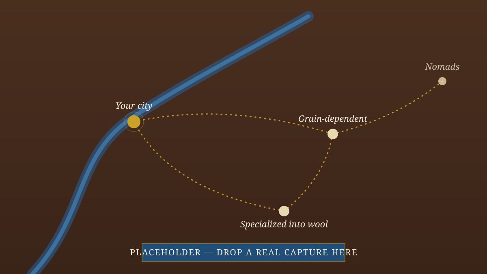
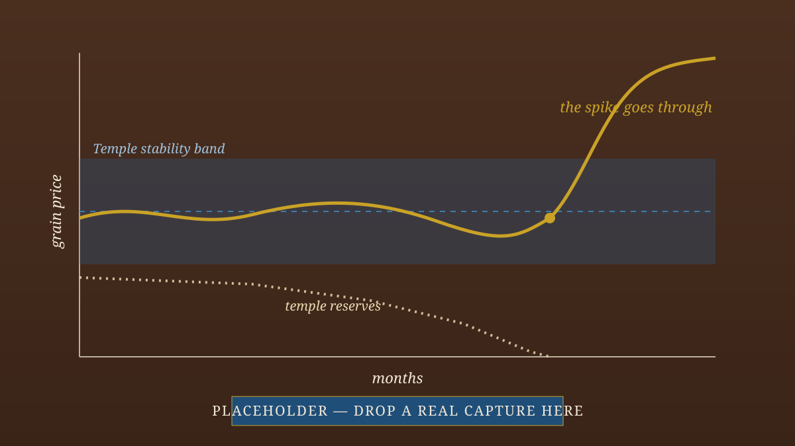

The Game
There is one substance in this game: physical stuff — grain, silver, labor, goods — produced, moved, held, and consumed. No stability meters, no loyalty points, no influence. Unrest is the cost of a garrison you must feed. Diplomacy is who depends on whose grain. Legitimacy is the festival grain the Crown can afford to give away.
And you are not the benevolent steward every other economy game makes you. You are the Crown — the extractive apex of a Bronze Age redistributive economy — pulling silver and labor toward the throne against two rival estates at home (the Temple and the private citizenry) and a map of rival cities abroad. Whenever a conventional strategy game would reach for a magic number, this one reaches for grain, silver, or labor instead. Everything else falls out of taking that seriously.

Things No Other Strategy Game Rewards
Engineer a high grain price in your own city — on purpose.
The Crown cannot tax barter. Forcing transactions at a dear price is how the throne liquefies wealth held in kind by the Temple and the private sector. Scarcity is the sovereign's revenue event.
Privatize your own farmland to afford an army.
Crown farms consume the corvée labor an army needs. Chartering them frees that labor — at the price of your grain reserve and food security. The same lever flips from suicidal to obvious as your economy matures.
Dominate a neighbor by selling to them — generously.
Flood a grain-rich neighbor with your cheap textiles and they never build workshops of their own. They feel prosperous; they are arrested. The cage only becomes visible the day you cut the flow.